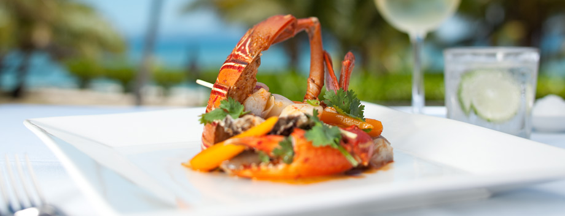
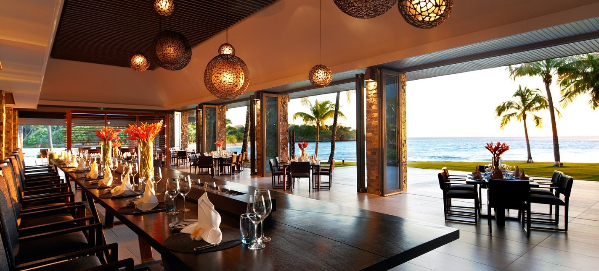

Fijian food has traditionally been very healthy. Fijians prefer a more tuber and coconut based diet.[1] High caloric foods are good for hard-working villagers who need extra calories while working on their farms but this causes a range of chronic illness such as obesity.[2] Fiji is a multicultural country and is home to people of various races. In most Fijians' homes, food of other cultures is prepared on a regular basis such as Indian curries and Chinese dishes. Fiji is also famous for its seafood.
Desserts or snacks are common and are eaten in between meals-often for morning tea and afternoon teas. Some common ones include pies filled with custard or pumpkin or pineapple. Steamed puddings are also common but these are rich in sugars and fats. Most homes would use coconut cream, caramelised sugar to give the color, flour, baking powder as the main ingredients. The pudding mixture is poured into tins and steamed for 1–2 hours. To improve the flavour, sometimes cinnamon or raisins are added. Some nice desserts are also made with cassava. Cassava is first grated and sugar is added. It is then wrapped in banana leaves and steamed. Burnt Sugar pudding (purini or pudini) is a favorite pudding in the Fijian cuisine. The historical existence is unknown, more than likely was introduced by the British, given their fondness for pastries and steamed puddings.
